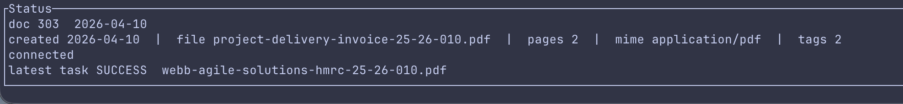

Quick start, commands, and compatibility
paperless-cli is a Rust application for Paperless-ngx with three output modes: tui, markdown, and json.
Install
cargo build --release
./target/release/paperless --helpQuick start
paperless login --url https://paperless.example.com --token YOUR_TOKEN
paperless
paperless --demo
paperless --output markdown document list --query "invoice 2024"
paperless --output json search query "invoice acme"TUI and demo mode
The default interface is a two-pane TUI with a scrolling document list on the left and a text inspector on the right. Use Tab to switch focus between panes, j/k or the arrow keys to move, PgUp/PgDn to page, g/G to jump, and r to reload.
For quick design and interaction feedback, run paperless --demo. Demo mode avoids real Paperless data and serves a built-in generic fixture dataset to both the CLI and the TUI.

Command surface
config:set-url,set-tokenpdf:read,infoproject:login,info,pingdocument:list,get,content,upload,download,preview,thumb,edit,update,delete,searchtag:list,get,create,edit,delete
Compatibility
document content <id>returns extracted text only.document edit <id> --add-tag ... --remove-tag ...accepts exact tag names or IDs.PAPERLESS_URLandPAPERLESS_TOKENare supported.- Global compatibility flags include
--json,-q/--quiet,--no-color, and-u/--url.
Release flow
The release workflow now matches the shape used in damacus/zitadel-tui: release-please manages tags and changelog updates, packaged tarballs and checksums are attached to GitHub releases, and successful releases publish the crate to crates.io.